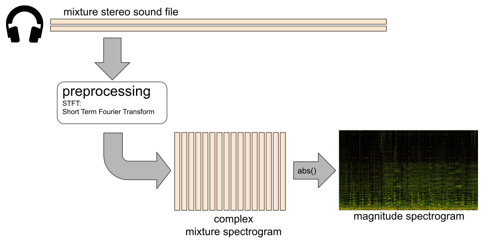
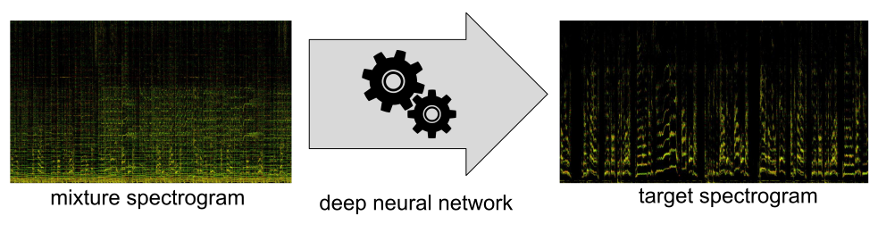
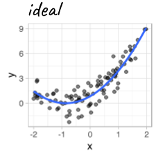
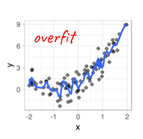
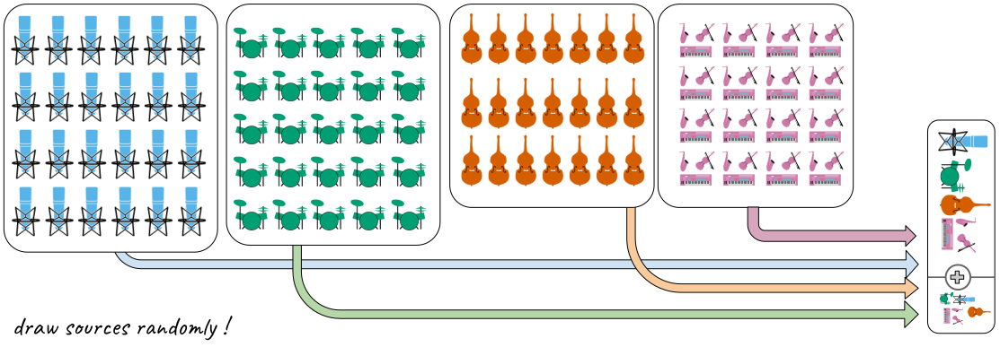

Deep learning for music separation
October 14th, 2019

Music Unmixing/Separation


Applications

- Automatic Karaoke
- Creative Music Production
- Active listening
- Upmixing (stereo $\Rightarrow$ 5.1)
- Music Education
- Pre-processing for MIR
Motivations of this talk
Understand source separation
- Signal processing aspects
- Quick overview of the topic
- Discriminative and generative methods
Understand deep neural nets
- Fundamental models for static/temporal data
- A starter on training
- Models for audio
Python practice
- How to implement and train deep nets with Pytorch
- Presenting
open-unmix/sigsep/open-unmix-pytorch - MIT-licensed state of the art performance
All slides and material available at:
/sigsep
What open-unmix can achieve
Signal processing
Time-frequency representations
Time frequency representations
Mixture spectrogram
Vocals spectrogram
Drums spectrogram
Bass spectrogram
Source separation: usual workflow

Source separation: usual workflow

Source separation: usual workflow

Source separation: usual workflow

The core ingredient
- Input is a sequence of spectra from the mixture
- Output is a sequence of spectra from the target
A starter on deep neural networks
Y. LeCun, et al. "Deep learning". nature, 521(7553), 436 (2015).
Static data
The basic fully connected layer


Static data
Basic fully connected network

Static data
A usual deep network

- Cascading linear and non-linear operations augments expressive power
- 7 millions parameters in our case
Temporal data
colah's blog, Understanding LSTM Networks, 2015.
Temporal data
From fully connected to the simple recurrent net

Temporal data
From fully connected to the simple recurrent net

Temporal data
From fully connected to the simple recurrent net

Temporal data
From fully connected to the simple recurrent net

Temporal data
The simple recurrent net

- $y_{t}=f\left(linear\left\{ x_{t},y_{t-1}\right\} \right)$
- Similar to a Markov model
- Exponential decay of information
- Vanishing or exploding gradient for training
- Limited for long-term dependencies
P. Huang, et al. "Deep learning for monaural speech separation". (2014) ICASSP.
Temporal data
The long short term memory (LSTM)

Temporal data
The long short term memory (LSTM)

Temporal data
The long short term memory (LSTM)

Temporal data
The bi-LSTM

- LSTM are causal systems
- Predicts future from past
Temporal data
The bi-LSTM

- We can use anti-causal LSTM
- Different predictions!
Temporal data
The bi-LSTM

- Independent forward and backward
- Outputs can be concatenated
- Outputs can be summed

Training a DNN
- Data vocabulary
- A music separation dataset
- Gradient descent
Data vocabulary

Data vocabulary

Data vocabulary

Data vocabulary

The MUSDB18 dataset

- 100 train / 50 test full tracks
$\Rightarrow$ with groundtruth sources
- Mastered with pro. digital audio workstations
- Parser and Evaluation tools in
Training procedure

Training procedure

Training procedure

Training procedure

Gradient descent

- Update $\Theta$ to reduce the loss!
- We can compute $\frac{\partial loss}{\partial\Theta_{i}}$ for any parameter $\Theta_i$
- It's the gradient
- Computed through backpropagation
$\Rightarrow$ "The influence of $\Theta_i$ on the error" - A simple optimization: $\Theta_i\leftarrow \Theta_i - \lambda \frac{\partial loss}{\partial\Theta_{i}}$
- $\lambda$ is the learning rate
$\Rightarrow$ It's the stochastic gradient descent
$loss\leftarrow \sum_{(x,y)\in batch}cost\left(y_\Theta\left(x\right), y\right)$
Gradient descent
Learning rate wisdom


Leonardo Araujo dos Santos, Artificial Intelligence, 2017.
The open-unmix (UMX) model
/sigsep/open-unmix-pytorch

The open-unmix (UMX) model
/sigsep/open-unmix-pytorch

The open-unmix (UMX) model
/sigsep/open-unmix-pytorch

- Input and output scaling are good for training
S. Uhlich et al. "Deep neural network based instrument extraction from music." ICASSP 2015.
The open-unmix (UMX) model
/sigsep/open-unmix-pytorch

- Skip-connections are good for training, but do not increase expressive power
R. Gribonval et al. "Approximation spaces of deep neural networks." arXiv 2019.
The open-unmix (UMX) model
/sigsep/open-unmix-pytorch

- Batch-normalization helps training by normalizing each batch.
Ioffe et al. "Batch normalization: Accelerating deep network training by reducing internal covariate shift". arXiv 2015.
$\Rightarrow$ But it breaks source absolute scale
Use the model to predict a filter on the mixture!
The open-unmix (UMX) model
/sigsep/open-unmix-pytorch

- The model now learns how to mask the mixture
$\Rightarrow$ Sources scales should be good
Training the final version


- Training goes wrong
$\Rightarrow$ Works well on training data$\Rightarrow$ Does not work on anything else!
What happened?!



The model just remembers 10h of training data !

Fighting overfitting
Regularization with dropout

- Parts of the net randomly set to 0
- No unit should be critical: regularization
- Probabilistic interpretation
N Srivastava, et al. "Dropout: a simple way to prevent neural networks from overfitting". JMLR. (2014) 15(1), 1929-1958.
Fighting overfitting
Data augmentation
- Artificially increase the size of the dataset
S. Uhlich "Improving music source separation based on deep neural networks through data augmentation and network blending." (2017) ICASSPA. Cohen-Hadria "Improving singing voice separation using Deep U-Net and Wave-U-Net with data augmentation."" arXiv 2019.

Fighting overfitting
Before:
Fighting overfitting
After:

$\Rightarrow$ Reach 6.3 dB vocals SDR on MUSDB18
Fighting overfitting
With MUCH more data:

$\Rightarrow$ Reach 7.5 dB vocals SDR on MUSDB18
Outline
Post-processing: filtering signals
$\Rightarrow$ starting point the multichannel Gaussian model
Multichannel Gaussian model

Multichannel Gaussian model

Multichannel Gaussian model

Multichannel Gaussian model

Multichannel Gaussian model

Multichannel Gaussian model

Multichannel Gaussian model

Multichannel Gaussian model

Multichannel Gaussian model

Multichannel Gaussian model

Multichannel Gaussian model

Conclusion
- Convergence of signal processing, probability theory and DL
- Learning with limited amount of data
- Model long term dependency
- Representation learning for sound and music
- Exploiting knowledge domain, user interaction
Resources
- References and Software tools: sigsep.github.io
- Open-unmix website: open.unmix.app
Reference
F. Stöter et al, "Open-Unmix - A reference implementation for audio source separation", JOSS 2019.
Some demos

Deep Learning for Music Unmixing